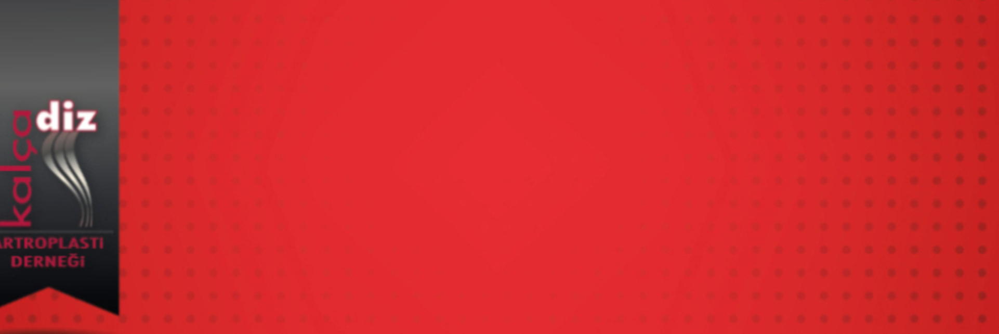

Değerli Meslektaşlarımız,
Kalça Diz Artroplasti Derneği olarak 2-3 Haziran 2023 tarihinde The Ankara Otel'de 20. Temel Artroplasti Kursunu gerçekleştireceğiz. Özellikle kalça,diz artroplastisi konusunda eğitim almak isteyen genç meslektaşlarımıza yönelik temel kursta teorik bilgilerin yanısıra kuru kemikler üzerinde pratik uygulamalar ile bilgi ve becerilerin güncellenmesi amaçlanmaktadır. Artroplasti konusunda deneyimli eğiticiler ile pratik ve teorik tartışma olanağı sağlanılmış olacaktır.
İki gün sürecek olan kursumuzda; güncellenmiş, interaktif bir program ile sizleri aramızda görmekten mutlu olacağız.
20. Temel Artroplasti Kursunda buluşmak üzere saygı sevgilerimizle.
Kurs Başkanı: Prof. Dr. Burak Akan
Dernek Başkanı: Prof. Dr. Emre Toğrul
